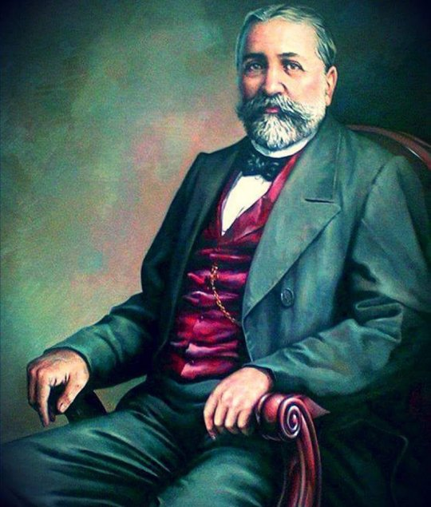
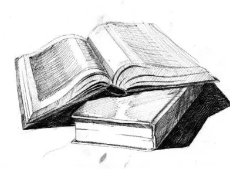
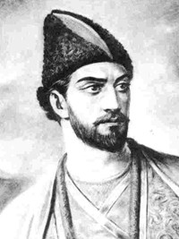
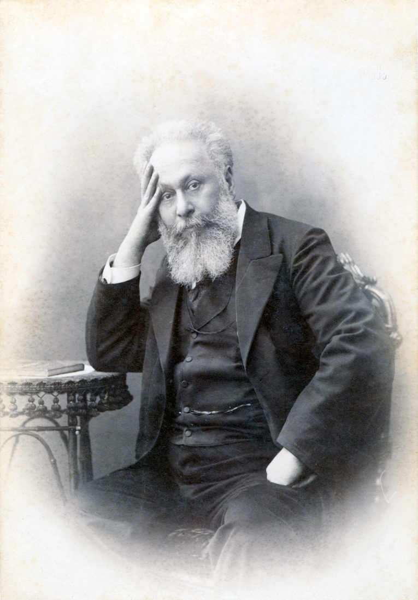
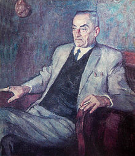

ვაჟა-ფშაველა — ქართული ლიტერატურის კლასიკოსი, პოეტი და მწერალი. დაბადების თარიღი: 14 ივნისი, 1861 დაბადების ადგილი: ჩარგალი გარდაიცვალა: 10 ივლისი, 1915, თბილისი შვილები: ლევან რაზიკაშვილი, ვახტანგ რაზიკაშვილი, თამარ რაზიკაშვილი,გულქან რაზიკაშვილი მშობლები:პავლე რაზიკაშვილი წიგნები: ალუდა ქეთელაური, სტუმარ-მასპინძელი, მეტი ფილმები: ვედრება, ჩხიკვთა ქორწილი, ბულბულის იუბილე
ილია ჭავჭავაძე — ქართველი საზოგადო მოღვაწე, პუბლიცისტი, ჟურნალისტი, პოლიტიკოსი, მწერალი, რუსეთის იმპერიის სახელმწიფო საბჭოს დეპუტატი 1906-1907 წლებში, მნიშვნელოვანი როლი შეასრულა მეცხრამეტე საუკუნეში საქართველოში სამოქალაქო საზოგადოების ჩამოყალიბებაში, გადამწყვეტი წვლილი შეიტანა საქართველოს ეროვნულ-განმათავისუფლებელი დაბადების ადგილი: ყვარელი დაბადების თარიღი: 8 ნოემბერი, 1837 მშობლები: მარიამ ბებურიშვილი, გრიგოლ ჭავწავაძე წიგნები: ოთარაანთ ქვრივი: მოთხრობები, მეტი განათლება: სანქტ-პეტერბურგის სახელმწიფო უნივერსიტეტი მეუღლე: ოლღა გურამიშვილი მოკლულია: 12 სექტემბერი, 1907, წიწამური
 შოთა რუსთაველი, რუსთველი — XII საუკუნის დიდი ქართველი პოეტი და მოაზროვნე, ავტორი საქვეყნოდ ცნობილი პოემისა „ვეფხისტყაოსანი“. მსოფლიოს მრავალ ლიტერატურათმცოდნეთა მიერ მიიჩნევა შუასაუკუნეების მსოფლიო ლიტერატურის ერთ-ერთ უმნიშვნელოვანეს წარმომადგენლად. დაბადების ადგილი: რუსთავი გარდაიცვალა: იერუსალიმი დაბადების თარიღი: 1172 დასაფლავებულია: ჯვრის მონასტერი ენა: ქართული ენა პერიოდი: XII საუკუნე
აკაკი წერეთელი — ქართველი პოეტი, მწერალი, პუბლიცისტი და საზოგადო მოღვაწე, თერგდალეულების ერთ-ერთი ლიდერი. სტრიქონები აკაკის ლექსიდან „ხატის წინ“ გამოყენებულია საქართველოს სახელმწიფო ჰიმნში „თავისუფლება“. დაბადების თარიღი: 21 ივნისი, 1840 დაბადების ადგილი: სხვიტორი გარდაიცვალა: 1915, საქართველო შვილები: ალექსი წერეთელი მეუღლე: Natalja Basilewskaja წიგნები: აკაკი წერეთელი (1840-1915): მოთხრობები, მეტი მშობლები: ეკატერინე წერეთელი, როსტომ წერეთელი
დაბადების თარიღი: 3 მაისი, 1893 დაბადების ადგილი: აბაშა გარდაიცვალა: 17 ივლისი, 1975, თბილისი წიგნები: დიდოსტატის კონსტანტინეს მარჯვენა, მეტი შვილები: ზვიად გამსახურდია მეუღლე: Miranda Palavandishvili განათლება: ჰუმბოლდტის უნივერსიტეტი (1918)